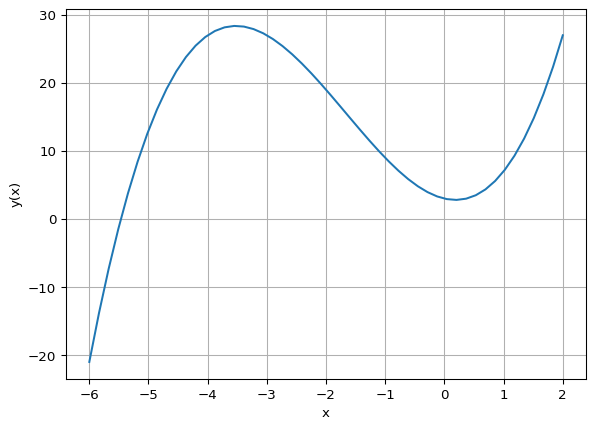
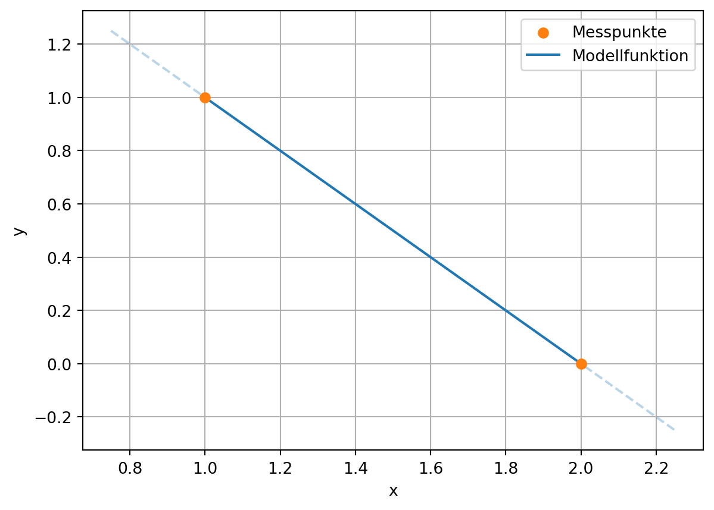
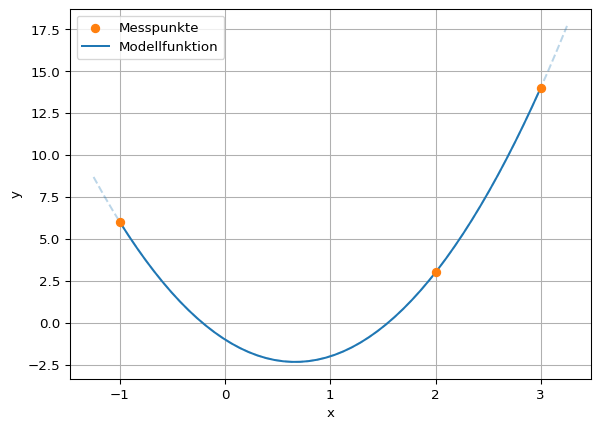
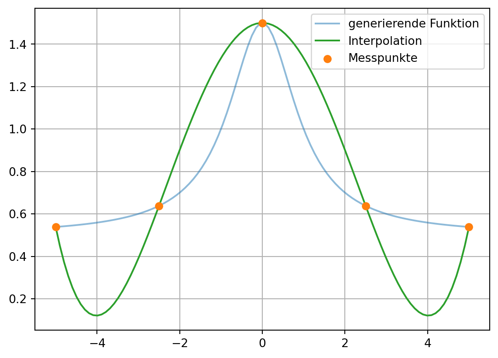
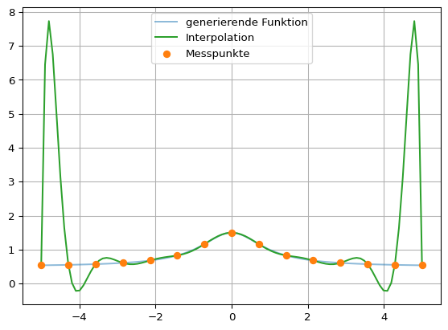

P = np.array([3, -2, 5, 1])
print(P)[ 3 -2 5 1]Was tun, wenn Werte fehlen? In vielen Datensätzen gibt es Lücken – zum Beispiel, weil Messungen nur an bestimmten Punkten vorgenommen wurden. Interpolation ist eine Methode, mit der wir Zwischenwerte schätzen können, also Werte innerhalb eines bekannten Wertebereichs.
Im Gegensatz dazu versucht Extrapolation, Werte außerhalb des bekannten Bereichs vorherzusagen – was in der Regel mit größerer Unsicherheit verbunden ist.
Bei der Interpolation wird eine Modellfunktion gesucht, welche die Messdaten exakt abbildet.
Die Modellierung von Daten hat das Ziel, eine Menge von Daten durch einen funktionalen Zusammenhang abzubilden. Daten aus Experimenten oder Simulationen können stark verrauscht und so für eine Weiterverarbeitung nicht geeignet sein. Eine mittelnde Funktion kann den Datensatz stark vereinfachen. Oder es existieren nur wenige Datenpunkte und die Zwischenstellen müssen durch eine Funktion bestimmt werden.
Generell kann die Modellierung von Daten auf folgendes Problem verallgemeinert werden:
Ein möglicher Ansatz ist die Darstellung der Modellfunktion als Summe von \(m\) Basisfunktionen \(\phi_i(x)\) mit den Koeffizienten \(\beta_i\).
\[ y(x) = \sum_{i=1}^{m}\beta_i \cdot \phi_i(x) = \beta_1\cdot \phi_1(x) + \cdots + \beta_m\cdot \phi_m(x) \]
Die Koeffizienten \(\beta_i\) müssen dabei so bestimmt werden, dass \(y(x)\) so gut wie möglich – oder gar exakt – die Messpunkte approximieren.
Als Abstandmaß zwischen einer Modellfunktion und den Messpunkten kann die L2-Norm verwendet werden. Diese ist definiert als
\[ || y(x) - (x_i, y_i) ||_2 = \sum_{i=1}^n \left(y(x_i) - y_i\right)^2 \quad . \]
Eine solche Norm gibt ein Maß für die Qualität einer Approximation: je kleiner der Abstand, desto besser die Qualität. Dies ermöglicht das Finden optimaler Koeffizienten und wird beispielsweise in der Methode der kleinsten Quadrate genutzt, in der ein Satz an Koeffizienten gesucht wird, der die L2-Norm minimiert.
In vielen praktischen Anwendungen werden Polynome als Basisfunktionen der Modellfunktion angenommen. Vorteile von Polynomen:
Ein Beispiel für eine Basis aus Polynomen:
\[ \phi_1(x)=1,\quad \phi_2(x)=x,\quad \phi_3(x)=x^2,\quad \cdots,\quad \phi_m =x^{m-1} \]
Polynome \(P(x)\) sind Funktionen in Form einer Summe von Potenzfunktionen mit natürlichzahligen Exponenten \(( x^i, i \in \mathbb{N})\) mit den entsprechenden Koeffzienten \(a_i\):
\[ P(x) = \sum_{i=0}^n a_i x^i = a_n x^n + a_{n-1} x^{n-1} + \cdots + a_2 x^2 + a_1 x + a_0, \quad i, n \in \mathbb{N}, a_i \in \mathbb{R} \]
Im NumPy-Modul werden Polynome durch ihre Koeffizienten repräsentiert. Im Allgemeinen wird ein Polynom mit dem Grad \(n\) durch folgendes Array dargestellt
[a0, a1, a2, ..., an]Beispielsweise für \(P(x) = 3 -2x + 5x^2 + x^3\):
P = np.array([3, -2, 5, 1])
print(P)[ 3 -2 5 1]Funktionen für die Auswertung von Polynomfunktionen stellt das Paket numpy.polynomial bzw. dessen Modul numpy.polynomial.polynomial bereit.
import numpy.polynomial.polynomial as polyDie Auswertung des Polynoms an einem Punkt oder einem Array erfolgt mit der poly.polyval(x, c)-Funktion. Diese berechnet die Funktionswerte für in x übergebene Werte mit den Funktionsparametern c.
x = 1
y = poly.polyval(x, P)
print(f"P(x={x}) = {y}")P(x=1) = 7.0x = np.array([-1, 0, 1])
y = poly.polyval(x, P)
print(f"P(x={x}) = {y}")P(x=[-1 0 1]) = [9. 3. 7.]Für die graphische Darstellung im Bereich \(x \in [-6, 2]\) kann das Paket Matplotlib verwendet werden.
x = np.linspace(-6, 2, 50)
y = poly.polyval(x, P)
plt.plot(x, y)
plt.xlabel('x')
plt.ylabel('y(x)')
plt.grid()
plt.show()
Um die Nullstellen eines Polynoms zu finden, kann die Funktion poly.polyroots() genutzt werden. Für das obige Polynom können folgende Nullstellen bestimmt werden.
nullstellen = poly.polyroots(P)
# direkte Ausgabe des Arrays
print("Nullstellen: ")
print(nullstellen)Nullstellen:
[-5.46628038+0.j 0.23314019-0.703182j 0.23314019+0.703182j]print("Nullstellen: ")
# schönere Ausgabe des Arrays
for i, z in enumerate(nullstellen):
if z.imag == 0:
print(f" x_{i+1} = {z.real:.2}")
else:
print(f" x_{i+1} = {z.real:.2} {z.imag:+.2}i")Nullstellen:
x_1 = -5.5
x_2 = 0.23 -0.7i
x_3 = 0.23 +0.7iIn diesem Beispiel sind zwei der Nullstellen komplex. Eine komplexe Zahl \(z\) wird in Python als Summe des Realteils (\(Re\)) und Imaginärteils (\(Im\)) dargestellt. Letzterer wird durch ein nachfolgendes j, die imaginäre Einheit, gekennzeichnet.
\[ z = Re(z) + Im(z)j \]
Die Nullstellen können auch zur alternativen Darstellung des Polynoms verwendet werden. Sind \(x_i\) die \(n\) Nullstellen, so ist das Polynom \(n\)-ten Grades durch folgendes Produkt beschrieben:
\[ P(x) = \prod_{i=1}^n \left(x - x_i\right) = (x - x_1)\cdot (x - x_2) \cdot \cdots \cdot (x - x_n) \]
Seien beispielsweise 1 und 2 die Nullstellen eines Polynoms, so lautet dieses:
\[ P(x) = (x - 1)(x - 2) = 2 - 3x + x^2 \]
Die Funktion poly.polyfromroots(nullstellen) kann aus den Nullstellen die Polynomkoeffizienten bestimmen. Anhand des obigen Beispiels lautet der Funktionsaufruf:
nullstellen = [1, 2]
koeffizienten = poly.polyfromroots(nullstellen)
print("Nullstellen:", nullstellen)
print("Koeffizienten:", koeffizienten)Nullstellen: [1, 2]
Koeffizienten: [ 2. -3. 1.]Das Modul numpy.polynomial.polynomial stellt viele praktische Funktionen zum Umgang mit Polynomen zur Verfügung. So existieren weitere Funktionen, um Polynome zu addieren, zu multiplizieren, abzuleiten oder zu integrieren. Eine Übersicht findet sich in der numpy-Dokumentation.
Interpolation ist eine Methode, um Datenpunkte zwischen gegebenen Messpunkten zu konstruieren. Dazu wird eine Funktion gesucht, die alle Messpunkte exakt abbildet, was gleichbedeutend damit ist, dass die L2-Norm zwischen Funktion und Punkten Null ist.
Zwei Punkte können z. B. mit einer Geraden interpoliert werden. Das heißt, für zwei Messpunktpaare \((x_1, y_1)\) und \((x_2, y_2)\) mit \(x_1\neq x_2\) existiert ein Koeffizientensatz, sodass die L2-Norm zwischen den Messpunkten und der Modellfunktion
\[ y(x) = \beta_0 + \beta_1 x \]
verschwindet.
# Beispieldaten aus y(x) = 2 - x
N = 50
dx = 0.25
def fnk(x):
return 2 - x
x = np.array([1, 2])
y = fnk(x)
plt.scatter(x, y, color='C1', label="Messpunkte", zorder=3)
x_modell = np.linspace(np.min(x), np.max(x), N)
plt.plot(x_modell, fnk(x_modell), color='C0', label="Modellfunktion")
x_linie = np.linspace(np.min(x)-dx, np.max(x)+dx, N)
plt.plot(x_linie, fnk(x_linie), '--', alpha=0.3, color='C0')
plt.xlabel("x")
plt.ylabel("y")
plt.legend()
plt.grid()
plt.show()
Für drei Messpunkte muss ein Polynom zweiten Grades verwendet werden, um die Punkte exakt zu erfassen.
\[ y(x) = \beta_0 + \beta_1 x + \beta_2 x^2 \]
# Beispieldaten aus y(x) = -1 - 4x + 3x^2
N = 50
dx = 0.25
def fnk(x):
return -1 - 4*x + 3*x**2
x = np.array([-1, 2, 3])
y = fnk(x)
plt.scatter(x, y, color='C1', label="Messpunkte", zorder=3)
x_modell = np.linspace(np.min(x), np.max(x), N)
plt.plot(x_modell, fnk(x_modell), color='C0', label="Modellfunktion")
x_linie = np.linspace(np.min(x)-dx, np.max(x)+dx, N)
plt.plot(x_linie, fnk(x_linie), '--', alpha=0.3, color='C0')
plt.xlabel("x")
plt.ylabel("y")
plt.legend()
plt.grid()
plt.show()
Dies kann verallgemeinert werden: \(n\) Messpunkte können exakt mit einem Polynom (\(n-1\))-ten Grades abgebildet werden. Die Suche nach den passenden Koeffizienten ist das Lagrangesche Interpolationsproblem. Für das gesuchte Polynom \(P(x)\) gilt:
\[ P(x_i) = y_i \quad i \in 1, \dots, n \]
Die Existenz und Eindeutigkeit eines solchen Polynoms kann gezeigt werden. Das gesuchte Polynom lautet:
\[ P(x) = \sum_{i=1}^n y_i I_i(x) \] \[ \text{mit}\quad I_i(x) = \prod_{j=1, i\neq j}^n \frac{x-x_j}{x_i - x_j} \]
Alternativ kann auch ein Gleichungssystem, welches durch die Polynomialbasis \(\phi_i(x)\) gegeben ist, gelöst werden. Für die \(n\) Punktepaare gilt jeweils:
\[ y(x_i) = \sum_{i=1}^{m}\beta_i \cdot \phi_i(x_i) = \beta_1\cdot \phi_1(x_i) + \cdots + \beta_m\cdot \phi_m(x_i) = y_i \]
Das allgemeine Geleichungssystem lautet
\[ \left( \begin{matrix} \phi_1(x_1) & \phi_2(x_1) & \cdots & \phi_m(x_1) \\ \phi_1(x_2) & \phi_2(x_2) & \cdots & \phi_m(x_2) \\ \vdots &\vdots & \ddots & \vdots \\ \phi_1(x_n) & \phi_2(x_n) & \cdots & \phi_m(x_n) \\ \end{matrix}\right). \left( \begin{matrix} \beta_1 \\ \beta_2 \\ \vdots \\ \beta_m \\ \end{matrix} \right) = \left( \begin{matrix} y_1 \\ y_2 \\ \vdots \\ y_n \\ \end{matrix} \right) \]
und mit der Polynomialbasis
\[ \underbrace{\left( \begin{matrix} 1 & x_1 & \cdots & x_1^{n-1} \\ 1 & x_2 & \cdots & x_2^{n-1} \\ \vdots &\vdots & \ddots & \vdots \\ 1 & x_n & \cdots & x_n^{n-1} \\ \end{matrix}\right)}_{V}. \left( \begin{matrix} \beta_1 \\ \beta_2 \\ \vdots \\ \beta_m \\ \end{matrix} \right) = \left( \begin{matrix} y_1 \\ y_2 \\ \vdots \\ y_n \\ \end{matrix} \right) \]
Die Matrix \(V\) heisst Vandermonde-Matrix und kann exakt gelöst werden, für \(m=n\) und wenn für alle \(i, j; i\neq j\) gilt \(x_i \neq x_j\).
In Python kann das Interpolationsproblem mit der Funktion numpy.polynomial.polynomial.polyfit() gelöst werden, das wir durch durch das Importieren des Moduls mit dem Schlüsselwort poly mit poly.polyfit() aufrufen können. Das folgende Beispiel demonstriert deren Anwendung.
Die Messtellen folgen in dem Beispiel der Funktion \(f(x)\), welche nur zur Generierung der Datenpunkte verwendet wird.
\[ f(x) = \frac{1}{2} + \frac{1}{1+x^2}\]
Zunächst werden die Messpunkte generiert.
def fnk(x):
return 0.5 + 1/(1+x**2)xmin = -5
xmax = 5
x = np.linspace(xmin, xmax, 100)
y = fnk(x)n = 5
xi = np.linspace(xmin, xmax, n)
yi = fnk(xi)Nun folgt die Interpolation für 5 und 15 Messpunkte.
P = poly.polyfit(xi, yi, n-1)
print("Interpolationskoeffizienten:")
print(P)Interpolationskoeffizienten:
[ 1.50000000e+00 -1.12346671e-16 -1.71087533e-01 6.98020740e-18
5.30503979e-03]plt.plot(x, y, color='C0', alpha=0.5, label='generierende Funktion')
plt.plot(x, poly.polyval(x, P), color='C2', label='Interpolation')
plt.scatter(xi, yi, color='C1', label='Messpunkte', zorder=3)
plt.legend()
plt.grid()
plt.show()
n = 15
xi = np.linspace(xmin, xmax, n)
yi = fnk(xi)
P = poly.polyfit(xi, yi, n-1)
plt.plot(x, y, color='C0', alpha=0.5, label='generierende Funktion')
plt.plot(x, poly.polyval(x, P), color='C2', label='Interpolation')
plt.scatter(xi, yi, color='C1', label='Messpunkte', zorder=3)
plt.legend()
plt.grid()
plt.show()
Die Interpolation erfüllt immer die geforderte Bedingung \(y(x_i) = y_i\). Jedoch führen Polynome mit einem hohen Grad oft zu nicht sinnvollen Ergebnissen. Es entstehen starke Überschwinger, welche mit zunehmendem Grad immer stärker werden.